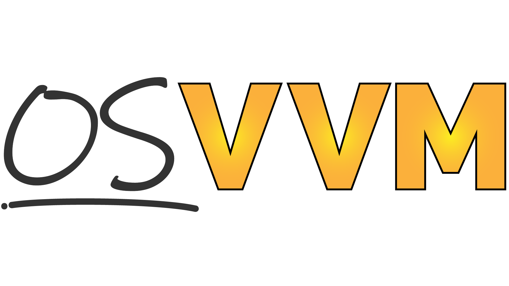

About OSVVM¶
About OSVVM¶
OSVVM is an advanced verification methodology that defines a VHDL verification framework, verification utility library, verification component library, scripting API, and co-simulation capability that simplifies your FPGA or ASIC verification project from start to finish. Using these libraries you can create a simple, readable, and powerful testbench that will boost productivity for either low level block tests (unit tests) or complex FPGA and ASIC tests.
OSVVM is developed by the same VHDL experts who have helped develop VHDL standards. We have used our expert VHDL skills to create advanced verification capabilities that provide:
A structured transaction-based framework using verification components that is suitable for all verification tasks - from Unit/RTL to full chip/system level testing.
Test cases and verification components that can be written any VHDL Engineer.
Test cases that are readable and reviewable by the whole team including software and system engineers.
Unmatched reuse through the entire verification process.
Unmatched test reporting with HTML based test suite reports, test case reports, and logs that facilitate debug and test artifact collection.
Support for continuous integration (CI/CD) with JUnit XML test suite reporting.
Powerful and concise verification capabilities including Constrained Random, Functional Coverage, Scoreboards, FIFOs, Memory Models, error logging and reporting, and message filtering that are simple to use and work like built-in language features.
A common scripting API to run all simulators - including GHDL, NVC, Aldec Riviera-PRO and ActiveHDL, Siemens Questa and ModelSim, Synopsys VCS, and Cadence Xcelium.
A Co-simulation capability that supports running software (C++) in a hardware simulation environment.
A Model Independent Transaction (MIT) library that defines a transaction API (procedures such as read, write, send, get, …) and transaction interface (a record) that simplifies writing verification components and test cases.
A rival to the verification capabilities of SystemVerilog + UVM.
Looking to improve your VHDL verification methodology? OSVVM provides a complete solution for VHDL ASIC or FPGA verification. There is no new language to learn. It is simple, powerful, and concise. Each piece can be used separately. Hence, you can learn and adopt pieces as you need them.
Important benefits of OSVVM:
- Each piece is independent
Add them to your current VHDL testbench incrementally.
- Verification Framework (aka. Structured Testbench Framework) that
Is based on transactions and verification components - just like SystemVerilog and SystemC
Is simple enough to use on small blocks - unlike SystemVerilog
Is powerful enough to use on large, complex FPGAs and ASICs - like SystemVerilog
Is so simple that we don’t need a “Lite” or “Easy” approach - unlike SystemVerilog
Uses transaction calls to write test cases which accelerates their development and simplifies readability.
Defines a pattern and utilities for verification component (VC) development
Defines a pattern and utilities for using VHDL records as an interface to connect testbench components
Defines a common set of Model Independent Transactions (MIT) that can be used for any address bus or streaming interface.
Facilitates reuse between RTL, Core, and System tests by using the same framework and verification components
Makes test cases readable by RTL, verification, software, and system engineers
- Verification utility library that
Simplifies Self-checking, Error handling, and Message Filtering
Implements Constrained Random, Functional Coverage, Scoreboards, FIFOs, Memory Models
Is simple to use and works like built-in language features
- Unmatched Test reporting
JUnit XML for use with continuous integration (CI/CD) tools.
HTML Build Summary Report for reporting test suite level information
HTML Test Case Detailed report for each test case.
HTML based Alert, Functional Coverage, and Scoreboard Reports
HTML based test transcript/log files
Find and debug issues faster
- Verification component library
Free open source verification components for AXI4 Full, AXI4 Lite, AXI Stream, UART, and DPRAM
More in progress
- One Script to Run Simulators
Same script supports GHDL, Aldec Riviera-PRO and ActiveHDL, Siemens QuestaSim and ModelSim, Synopsys VCS, and Cadence Xcelium
- Co-simulation
Supports running software (C++) in a hardware simulation environment
Write test cases in C++
Run C++ models such as instruction set simulators
- Tests and verification components can be written by any VHDL Engineer
While on a project it is good to separate design and verification, our engineering team members should be able to do either.
- It is free open source
It upgrades an ordinary VHDL license with full featured verification capabilities.
SynthWorks has been using OSVVM for 25+ years in our training classes and consulting work. During that time, we have innovated new capabilities and evolved our existing ones to increase re-use and reduce effort and time spent.